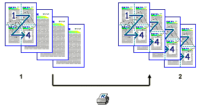

When you create several sheets of data in applications such as Microsoft® Excel® and want to print out all sheets using the same print settings, you can apply the print settings of the first sheet to the rest. By using this function, you need not to make print settings for the other sheets.

Make the print settings for the first of the four sheets of data.
These print settings are applied to the remaining three sheets.
Note:
To use this function, log on as a member of the Administrators or Power Users group.
Following print settings are not applied to the remaining sheets;
Document Size:, Orientation, Custom Paper Size, Printable Area:, Vector/Raster:, Color/ Black and White:, 2 sided:, Resolution:, Use Application Zoom
In the Devices and Printers window, open the printer properties dialog box.
On the Advanced Options tab, select the Increase Auto-keep Settings for Applications check box.
Click OK to close the printer properties dialog box.